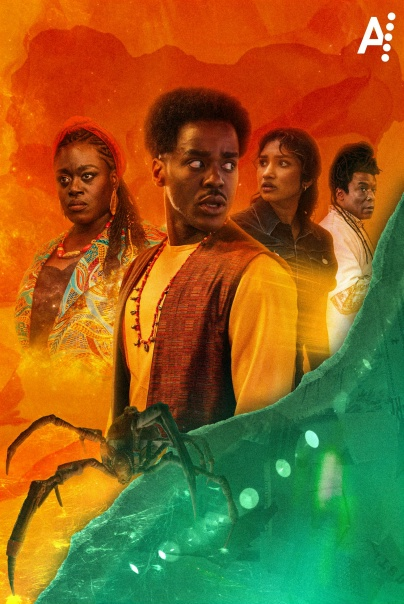

Эра Пятнадцатого Доктора (2 сезон)
<<< НАЗАД ||| 5. История и двигатель ||| ДАЛЬШЕ >>>
MVO [TVShows] 2.0 + 5.1, DUB [IRONVOICE], MVO [GoLTFilm], [LE-Production], [RHS], [ColdFilm], DVO [KerobTV] или Original [ENG]
Субтитры: Русские, форсированные или
Русские {TrueTransLate} - на английской дорожке
 | Все 8 серий |
The Story & the Engine
Дата выхода: 10 мая 2025
Формат: 47-минутный эпизод
| Варианты озвучек: | * Разные: смотрите по инструкции |
|---|---|
| Скачивание и просмотр: |
Порой древнему Повелителю времени надо отдохнуть. Найти друзей, расслабиться, забыться и просто наслаждаться историями. Одно из мест, где он может сделать это — «Дворец Омо».
Но когда ТАРДИС прибывает туда, оказывается, что в Омо сменился хозяин. Исчезают люди. Нечто огромное и голодное требует пищи. И Доктор обнаруживает вселенную, о которой раньше даже не подозревал.


